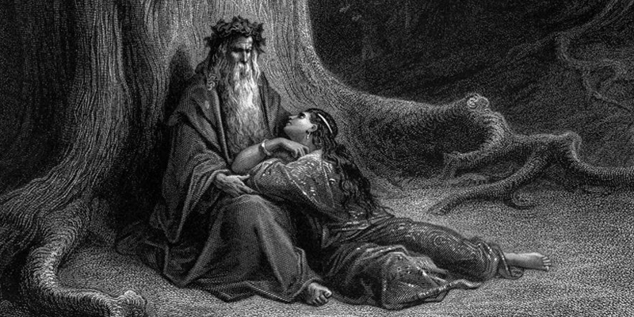

Personality Traits

พ่อมดเมอร์ลินเป็นที่รู้จักกันมาก ในตำนานท่านเป็นผู้ที่พากษัตริย์อาร์เทอร์ไปหาดาบเอกซ์แคลิเบอร์ และเป็นผู้ที่รอบรู้มากซ้ำยังมีเวทมนตร์ที่แข็งแกร่ง ท่านมีลูกศิษย์คนหนึ่งซึ่งได้ทรยศท่านในภายหลังและท่านเป็นพ่อมดผู้ยิ่งใหญ่แห่งยุค